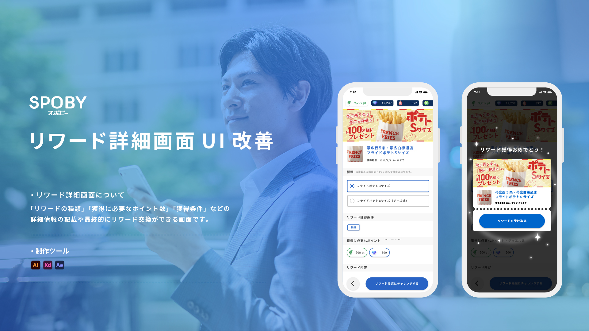
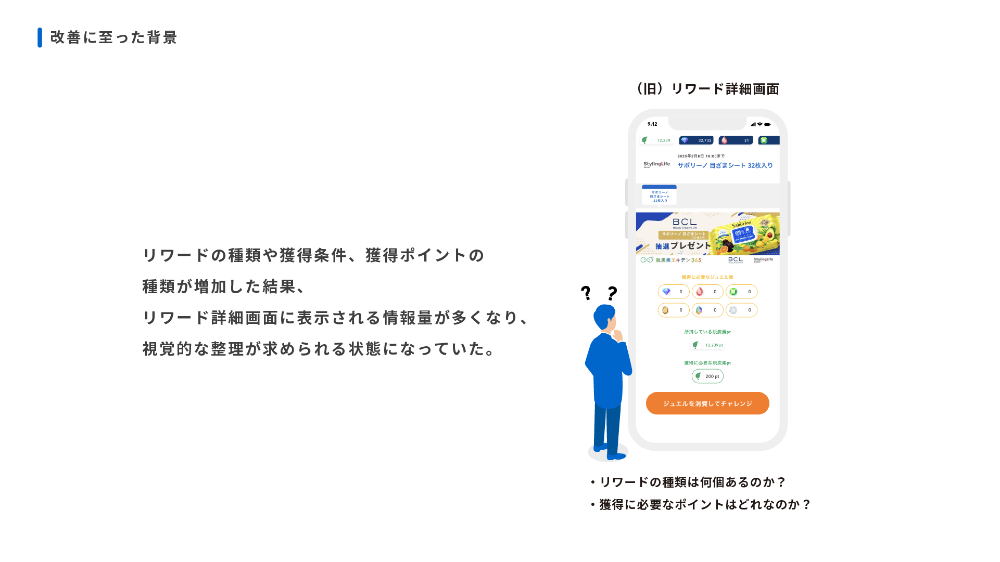
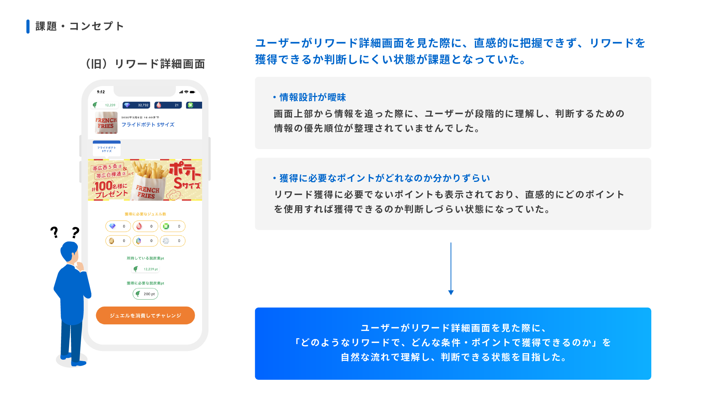
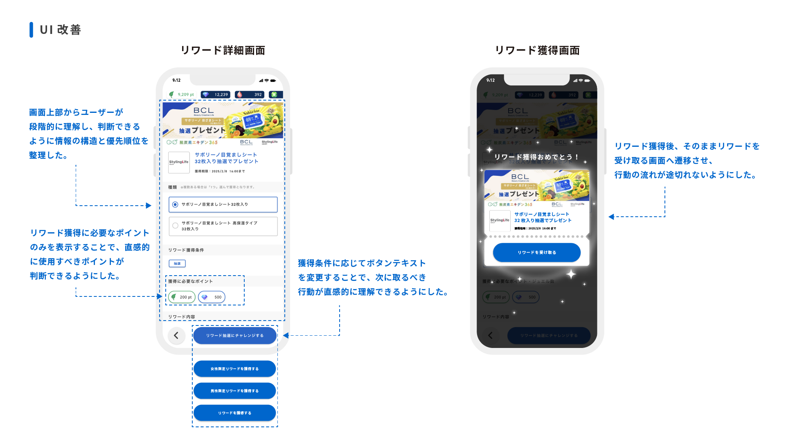
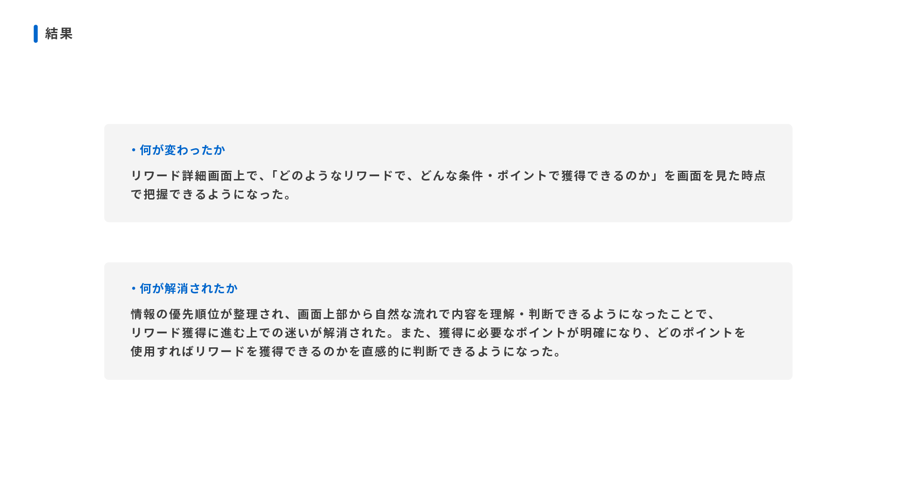
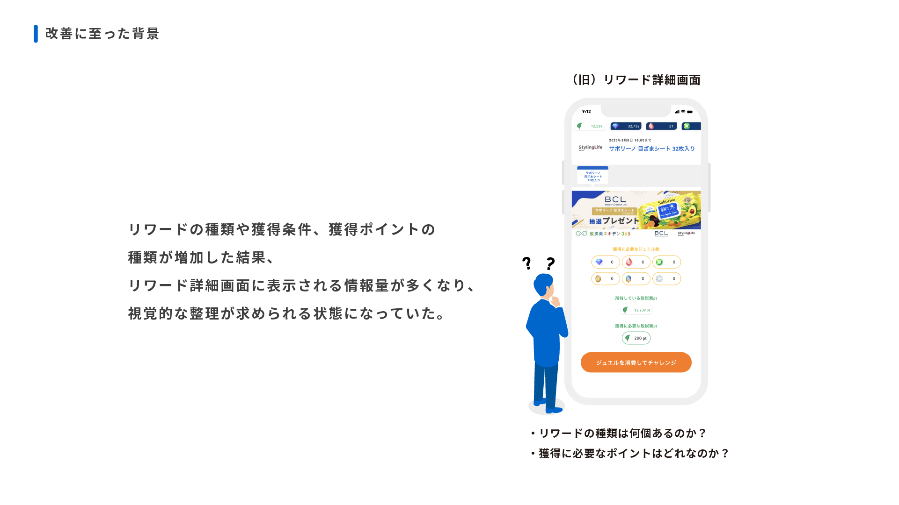
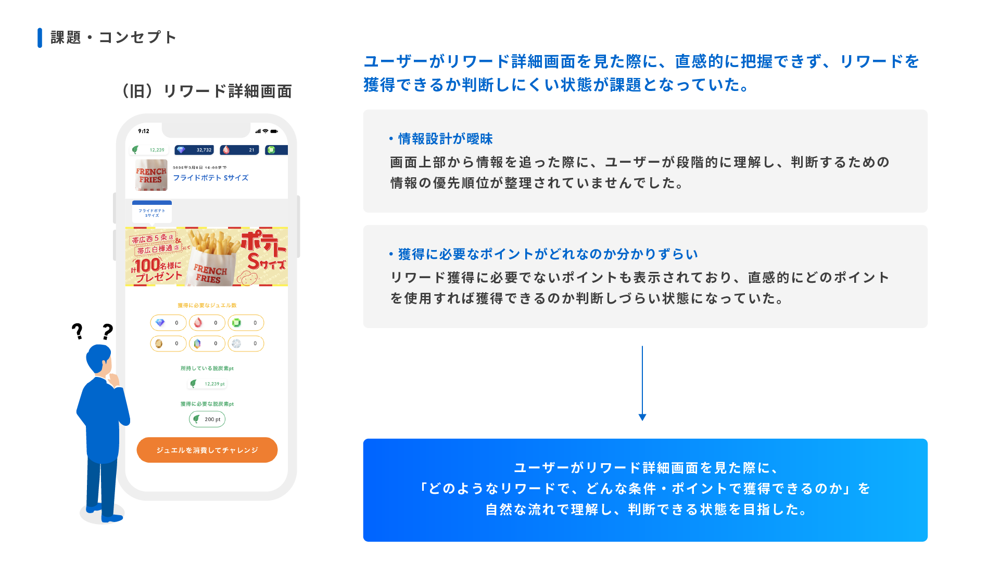
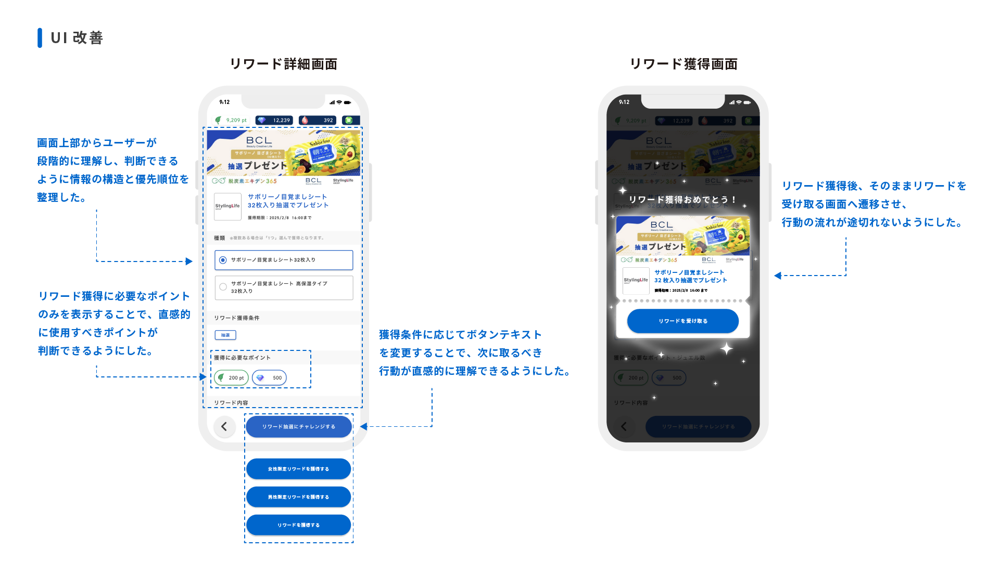
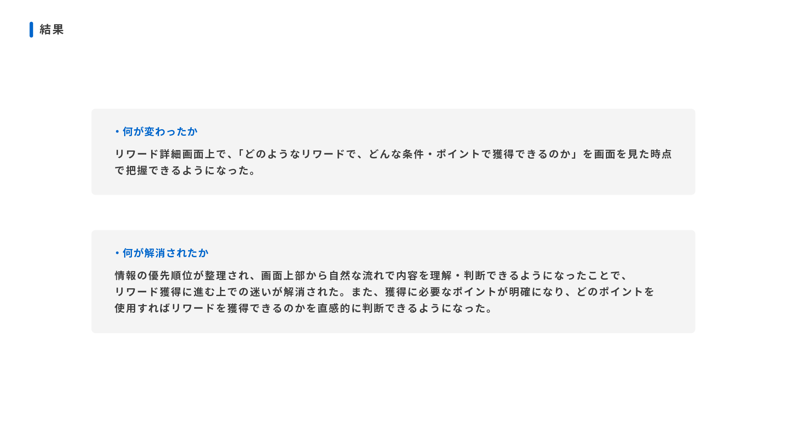

 







SPOBY リワード詳細画面UI改善
制作背景・意図
- 【概要】
-
- 役割 : ユーザーがリワード内容・獲得条件・行動判断を段階的に理解できるよう整理する役割を担う画面です。
- 掲載場所 : SPOBYアプリ内 リワード詳細画面
- アプリ（SPOBY）について :
「SPOBY」は人の活動による脱炭素・健康増進を実現するアプリです。ユーザーはアプリを利用して活動を行うことでポイントを獲得でき、貯まったポイントはアプリ内に掲載されている様々なリワードと頑張ったご褒美として交換・獲得することができます。
- 【背景/課題】
-
-
従来のリワード詳細画面では、情報の構造設計が整理されておらず、ユーザーが何をどの順で確認すればよいのか分かりづらい設計になっていました。具体的には、獲得に使用しないポイント種別まで「獲得に必要なジュエル・ポイント」として表示されており、どのポイントでリワードを獲得できるのかを直感的に判断しづらい状態でした。また、画面上部から情報を追った際に、リワード内容よりも先に種類や選択肢といった詳細情報が表示されており、ユーザーが段階的に理解して判断するための情報の優先順位が整理されていませんでした。その結果、リワード内容の把握から獲得条件の理解、行動判断までの思考プロセスが分断され、ユーザーが迷いやすい画面構造となっていました。
- 【制作目的】
-
- 情報の優先順位や表示順が整理されていなかった従来の画面構造を見直し、ユーザーが「どのようなリワードなのか」「どの条件で獲得できるのか」「自分はチャレンジすべきか」を自然な流れで理解・判断できる状態をつくることを目的として制作しました。
これにより、不要な迷いや誤解を減らし、リワード獲得への行動をスムーズに促すことを狙っています。
- 【制作時に重視したポイント】
-
- 情報の優先順位と表示順の整理
ユーザーの理解プロセスに沿って、「リワード名・種類 → 獲得条件 → リワード詳細内容 → 行動」の順で情報を構成しました。
- 不要な情報の排除と明確化
実際に使用しないポイント情報を表示しないことで、どのポイントでリワードを獲得できるのかを直感的に判断できるようにしました。
- 判断コストを下げる構造設計
画面を見ただけで必要な情報が把握できるよう、ユーザーが考え込まなくてもよい設計を意識しています。